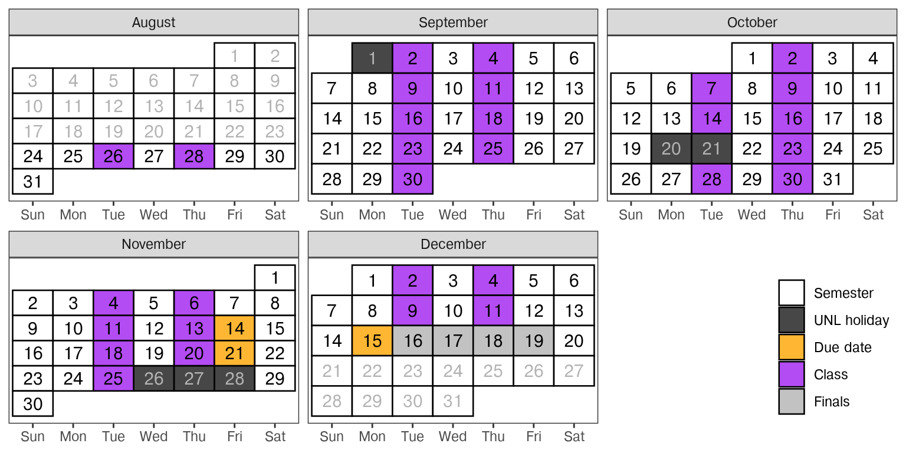

Syllabus - Stat 351
- Instructor
- Susan Vanderplas
- susan.vanderplas@unl.edu
- Office
- Hardin 343D
- Time
- TR 11:00-12:15
- Location
- KEIM 214
- Student Hours Schedule here
1 Course Description
Computational skills for management, visualization and analysis of large and complex data which are necessary for modern statistics. Includes a wide range of topics necessary for data analytics, including harvesting data from websites and common data structures, setting up and working with databases, and designing interactive data displays.
1.1 Objectives
- Access and leverage data stored in formats which are commonly used outside of statistics (HTML, JSON, XML, PDF, APIs) and transform these data to formats which are used for statistical analysis.
- Scrape data off of the internet and assemble it into a “tidy” format for visualization and analysis.
- Read in structured data from record-based formats (XML, JSON) and transform this data to a table-based format.
- Use optical character recognition and other tools to extract data from a PDF file systematically.
- Use an API to request data from an online service.
- Implement data cleaning and quality control measures to ensure that data is read in correctly.
- Develop skills for visualization and communication of complex data using interactive graphics. You will be able to
- Determine when an interactive chart is preferable to a static chart.
- Create an interactive chart using JavaScript-based tools such as Plotly, Observable.js, or Shiny.
- Integrate your interactive chart into a report or web page, along with supportive text describing the chart and important findings.
- Understand and leverage data management tools for storing and manipulating data, including
- Identifying situations where an external database is preferable to working with data in-memory.
- Accessing data in an external SQL, Parquet, or Arrow database.
- Discussing the tradeoffs between different tools for data management and different approaches to data storage.
- Design an analysis strategy for large data which does not fit into computer memory by selecting from strategies such as sampling and split-apply-combine.
2 Class Schedule & Topic Outline
This schedule is tentative and subject to change. Students are expected to complete assigned reading materials before coming to class.
| Week | Topic | Important Dates |
|---|---|---|
| 1 | Intro & HTML Primer | NA |
| 2 | Web Scraping | NA |
| 3 | Web Scraping | NA |
| 4 | Record-based Data and List Processing | NA |
| 5 | Application Programming Interfaces | NA |
| 6 | Application Programming Interfaces | NA |
| 7 | PDF Tools | NA |
| 8 | PDF Tools | NA |
| 9 | Using Appropriate Graphics | NA |
| 10 | Using Appropriate Graphics | NA |
| 11 | Shiny and JavaScript Graphics | NA |
| 12 | Approaches to Big Data | Screencast Due |
| 13 | SQL and SQLite | Screencast Peer Reviews Due |
| 14 | Thanksgiving | NA |
| 15 | Apache Arrow | NA |
| 16 | DuckDB | NA |
| 17 | Finals | Final Exam |
3 Course Essentials
3.1 Assessment/Grading üíØ üóíÔ∏è
| Assignments | Weight |
|---|---|
| Reading Quizzes & Participation | 10% |
| Homework/Labs | 50% |
| Screencast | 20% |
| Final Exam | 20% |
Lower bounds for grade cutoffs are shown in the following table.
| Letter grade | X + | X | X - |
|---|---|---|---|
| A | 96.5 | 93.5 | 89.5 |
| B | 86.5 | 83.5 | 79.5 |
| C | 76.5 | 73.5 | 69.5 |
| D | 66.5 | 63.5 | 60.5 |
| F | <60.5 |
Interpretation: A grade of 84.3 will receive a B. A grade of 79.49 will receive a C+. A grade of 73.49 will receive a C-. Anything below a 60.5 will receive an F.
3.2 Course Components
3.2.1 Reading Quizzes üìñ
You will have weekly reading assignments which introduce the weekly focus area and provide different perspectives on the material. Some of these perspectives will be covered in class lectures and activities, but some will not and are provided to expose you to different approaches and opinions.
In order to motivate the importance of doing the weekly reading before class, you will be given a weekly reading quiz in class which covers the requisite material.
3.2.2 Homework/Lab Assignments üíª
Weekly formative assignments (assignments meant to help you practice skills) will be given throughout the semester.
You will typically have one week to work on each of the assignments.
Assignments must be submitted in the file format specified, and should run or compile as submitted for credit to be given.
I will attempt to grade formative assignments within a week of the specified due date.
The assignment due date in Canvas will be set to at least 48 hours before the hard deadline for assignment submission. This provides an implicit “grace period” for assignment submission. No additional extensions will be provided.
3.2.3 Screencast
You will produce a screencast which demonstrates your skills in data acquisition and data visualization. This project will be submitted around midterms.
3.2.4 Final Exam
A final exam (format TBD) will be used to assess your ability to meet the learning objectives for the course. The exam will be due during the scheduled final exam period for the course (Monday, December 15). It is possible that a take-home portion of the exam may be initially assigned during the last week of classes.
3.3 Course Policies
3.3.1 Late Work Policy ⏰
Late assignments will be accepted only under extenuating circumstances, and only if you have contacted me prior to the assignment due date and received permission to hand the assignment in late. I reserve the right not to grade (or to assign a 0 to) any assignments received after the assignment due date without prior approval. Most lab assignments build in a “grace period” - they are typically due on Friday and the assignment closes Sunday evening. This additional time serves as a general deadline extension to provide an extra few days to work on the assignment.
3.3.2 Attendance & Participation :person:
You are expected to attend class and participate in online discussions. Consistent, repeated failure to attend class or actively participate in class will affect the participation portion of your grade.
Excused Absences
The university lists several reasons that a student may miss a class or significant component of the course such as an exam Faculty Senate Class Attendance Policy.
- illness of self or dependent,
- participation in UNL-sponsored activities,
- military service or jury duty,
- bereavement, or
- religious observance
In all cases, students are expected to provide notice to the instructor or the university as soon as possible.
Religious observance requests must be made by the 2nd week of class.
Conflicts with scheduled UNL-sponsored activities (including participation in conferences) should be communicated to the instructor by the 2nd week of class (if scheduled at the start of the semester) or with at least 2 weeks notice. Emergent conflicts will be handled on a case-by-case basis, but prior notice is expected.
To initiate bereavement leave, students should contact the Vice Chancellor for Student Affairs, and that office will coordinate with instructors.
In the case of extended or chronic illness, the student should work with Disability Services to obtain formal accommodations. Disability Services may require medical documentation as part of the accommodations process.
Illness ü§í & Excused Absences
If you are feeling ill, please do not come to class. Instead, review the material and work on the homework/lab assignment, and then schedule an appointment with me to meet virtually within a week of your absence. In the appointment reason field on Calendly, indicate that this appointment is to substitute for your in-class participation on the date you missed.
If you need to miss more than 1-2 classes for illness, I reserve the right to require documentation from Disability Services or a medical provider.
Inclement Weather üå®Ô∏è üå™Ô∏è ‚õàÔ∏è
If in-person classes are canceled, you will be notified of the instructional continuity plan for this class by Canvas Announcement. When there is power in the Lincoln area, we may hold class via Zoom; however, I may assign an asynchronous activity instead. You will be held to the same participation and professionalism standards on Zoom as you are in person, and participation and attendance will be graded accordingly. That is ‚Äì cameras should be on, you should be fully clothed, and you should be an active participant and not an empty black box. If there is a reason you don‚Äôt want your camera to be on (e.g. if you‚Äôre in an environment you can‚Äôt fully control, or you‚Äôre sick and don‚Äôt want to be on camera), let me know. Pets are 100% welcome to join the zoom call ‚ù§Ô∏è üê∂ üê±.
3.4 Expectations
You can expect me to:
- reply to emails within 48 hours during the week (72 hours on weekends)
- be available in class to assist with assignments
- be available by appointment for additional help or discussion
I expect you to:
- Read the module material and homework assignment before coming to class
- Engage with the material and your classmates during class
- Seek help when you do not understand the material
- Communicate promptly if you anticipate that you will have trouble meeting deadlines or participating in a portion of the course.
- Do your own troubleshooting before contacting me for help (and mention things you’ve already tried when you do ask for help!)
- Be respectful and considerate of everyone in the class
3.4.1 Communication
If you are lost or confused or have a problem related to the course, make contact early! It is much easier to address a small problem early than to fix a cascade of issues later in the semester.
3.4.2 Make Mistakes! üöó üí•
Programming is the process of making a series of silly or stupid mistakes, and then slowly fixing each mistake (while potentially adding a few more). The only way to know how to fix these mistakes (and avoid them in the future) is to make them. (Sometimes, you have to make the same mistake a few dozen times before you can avoid it in the future). At some point during the class, you will find that you’ve spent 30 minutes staring at an error caused by a typo, a space, or a parenthesis in the wrong place. You may ask for help debugging this weird error, only to have someone immediately point out the problem… it is always easier to see these things in someone else’s code. This is part of programming, it is normal, and you shouldn’t feel embarrassed or sorry (unless you put no effort into troubleshooting the problem before you asked for help).
If you manage to produce an error I haven’t seen before, then congratulations. You have achieved something special, and that achievement should be celebrated. Each new and bizarre error is an opportunity to learn a bit more about the programming language, the operating system, or the interaction between the two.
3.4.3 Evaluation Criteria
In every assignment, discussion, and written component of this class, you are expected to demonstrate that you are intellectually engaging with the material. I will evaluate you based on this engagement, which means that technically correct but low effort answers which do not demonstrate engagement or understanding will receive no credit.
When you answer questions in this class, your goal is to show that you either understand the material or are actively engaging with it. If you did not achieve this goal, then your answer is incomplete, regardless of whether or not it is technically correct. This is not to encourage you to add unnecessary complexity to your answer - simple, elegant solutions are always preferable to unwieldy, complex solutions that accomplish the same task.
Grammar and spelling are important, as is your ability to communicate technical information clearly in a written format; both of these criteria will be used in addition to assignment-specific rubrics to evaluate your work.
3.4.4 Academic Integrity and Class Conduct
You will be engaging with your classmates and me through in-person discussions and collaborative activities. It is expected that everyone will engage in these interactions civilly and in good faith. Discussion and disagreement are important parts of the learning process, but it is important that mutual respect prevail. Individuals who detract from an atmosphere of civility and respect will be removed from the conversation or the classroom.
Students are expected to adhere to guidelines concerning academic dishonesty outlined in Article III B.1 of the University’s Student Code of Conduct. The Statistics Department academic integrity and grade appeal policy is available here.
AI and Explainability Policy
Any use of generative AI must be disclosed in an appendix to your submission - this includes brainstorming, editing, using AI as spell-check/grammar-check, and so on. You must document the following:
- the version of the generative AI used
- the full sequence of prompts and responses
- any additional inputs you provided to the AI system
- a “diff” between the AI responses and your submission, showing exactly what was generated by the AI system and what you changed.
It may be useful to leverage AI tools to ensure that your work conforms to grammar and style guidelines, but I very highly discourage the use of generative AI for content or code.
Oral Exams
I reserve the right to replace the grade on any written assignment with a graded oral exam on your submission. This policy is not intended to be punitive – it may be used to resolve issues where question wording was not clear or was misinterpreted. Rather, it is intended to be used to assess what you actually know when I suspect that the written assignment is not a good measure of your knowledge or skills.
Code
You must be able to explain any work you turn in. - If you cannot explain the logic behind your approach as well as how it works in practice, then you will not receive credit for your submission. This is in line with what is generally considered acceptable behavior in programming - reuse is fine (subject to the code’s license), but you must still be able to understand and modify any code you did not write yourself.
- If you copy and modify code from another source (StackOverflow, Rbloggers, etc.), provide that source in a comment above the code. This provides you with documentation as to how you got to the solution, and also provides credit to the original source. (This practice has been helpful to me on many occasions when I come back to code I wrote long ago)
Exams
No external resources are allowed on exams (including, but not limited to: the internet, AI, StackOverflow, a friend) for assistance unless specifically stated in the problem (and then, only on that specific problem). Use of any external resources will be grounds for an academic integrity violation under Section 2.A.5, “Failing to follow the rules”.
4 Required University Information
See https://executivevc.unl.edu/academic-excellence/teaching-resources/course-policies.